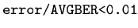

ber_estimate
Bit-error rate estimate by Monte Carlo simulation
[COND,AVGBER,NRUNS,STDBER]=BER_ESTIMATE(PAT_HAT,PAT,X)
[COND,AVGBER,NRUNS,STDBER]=BER_ESTIMATE(PAT_HAT,PAT,X,NIND)
[COND,AVGBER,NRUNS,STDBER]=BER_ESTIMATE(PAT_HAT,PAT,X)
estimates the average bit error rate (AVGBER) by standard
Monte Carlo (MC) simulation.
NRUNS is the number of samples used in the estimation. STDBER
is the standard deviation of the measured BER. COND is true
during the MC cycle, and false when the convergence stop criterion
has been reached. PAT is the bit pattern, decoded with pat_decoder
if necessary, while PAT_HAT is the received estimated pattern
given by samp2pat.
X is a struct with one or both of the following fields:
- X.stop = vector [t1 t2]. t1 is the
relative BER accuracy, while t2 the Gaussian confidence of
the accuracy. In such a case the MC simulation tests a sufficient
number of runs as soon as the accuracy is reached. For instance, with
t1=0.01 and t2=95, the simulation ends as soon as
the ratio

being error the estimated error on AVGBER with a Gaussian
confidence of 95%. Beware that the concept of confidence works for
Gaussian distributed random variables, while in the general case with
few samples it is just a rule of thumb. A Gaussian confidence of 68%
means that a Gaussian distributed BER is within +/- STDBER
with probability 68%.
- X.nmin = minimum number of errors counted. In absence of
X.stop this is also the overall number of errors counted.
If not specified, the default value is 1.
[COND,AVGBER,NRUNS,STDBER]=BER_ESTIMATE(PAT_HAT,PAT,X,NIND)
runs a vectorial MC. In this case X must have the additional
field:
- X.dim = dimension of AVGBER (external cycle dimension).
COND,AVGBER,NRUNS,STDBER are vectors of size X.dim,
and they are currently evaluated in position (or index) NIND.
Such options is useful for MC estimation inside a loop and allows
to evaluate all the entries of AVGBER with the same accuracy
given by X.stop and X.nmin. COND is a vector
of logical. Example: MC estimation for a system by testing a vector
of post-compensating fibers placed at the end of the link. See the
examples for more information.
|
Note: A Monte Carlo estimation of the bit error rate requires
that the sampling time is fixed, hence call eval_eye
using the option X.ts (see eval_eye).
Otherwise eval_eye may uses different sampling
time from run to run due to different sampling time optimizations. |
eval_eye, ber_kl,
pat_decoder
An exhaustive description of the Monte Carlo method can be found in
[23]. Other significant contributions are in [24,22].
A tutorial about the evaluation of the bit error rate in digital systems
is in [25].
Optilux toolbox reference manual